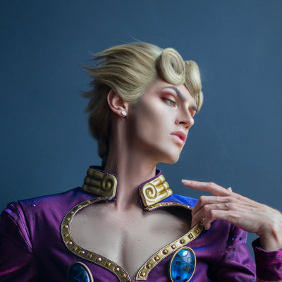

Our mission
We are commited to sharing a fresh but authentic italian cuisine to our costumers. To this goal we offer many dishes normally overlooked outside of Italy. We use ingredients sourced from verified Italian suppliers and offer many more regional dishes and drinks on our menu. Many people know about the famous Italian wine and espresso's, but do you know whats a spritz? Many have eaten pastas and pizzas, but have you ever had a delicious Ribollita? It is our mission to share these wonderful yet unknown dishes and experiences with you.
Our History
Our restaurant was opened in 2006 with as a small-scale restaurant with our mission in mind. Since then we have grown and become an integral part of our local community. Through the support of our costumers we have had the chance to host local tv-shows and many community-based events such as our monthly AntiPastor Service Sunday, we offer a unqiue regional staple on our menu, along with a presentation of the chef about its history and origin. In 2014 we received a michelin 2-star award for our excellence in seafood. But our story is not over yet, come by and help write the next chapter in our story!
Our Personel
The AntiPastor
Our Head chef and owner Giorno Giovanna known by our customers as the AntiPastor is an enthusiastic chef who came to the netherlands at the age of 23 after his formal training in Italy to share his love of food with the rest of the world.
The Custodian
Roberta Flavio is our custiodian in charge of organizing events and maintaining the restaurants interior. If anything other than food needs attention Roberta is your woman!
The Youth Pastar
Marco Giovanna is the fresh blood of our restaurant. He is in charge of making new recipes and makes sure our restaurant keeps in touch with the need of our costumers. He is also the AntiPastor in training preparing himself to one day succeed his fathers legacy.